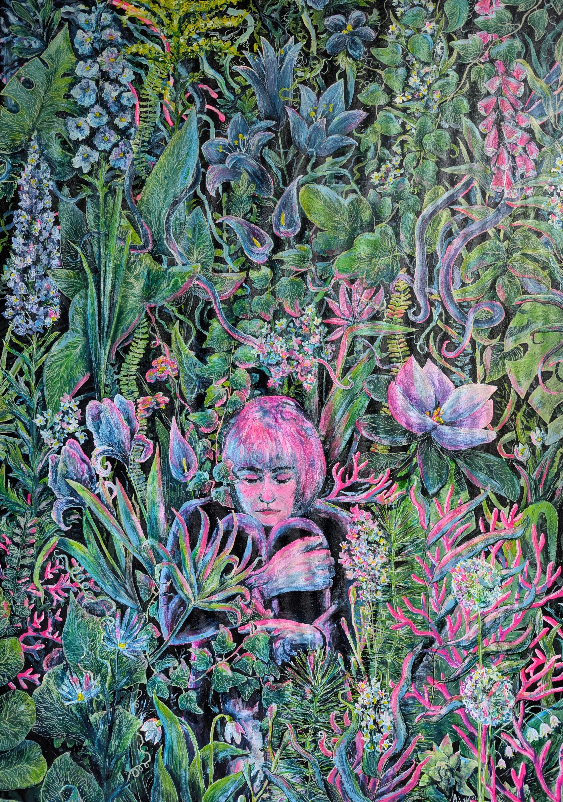
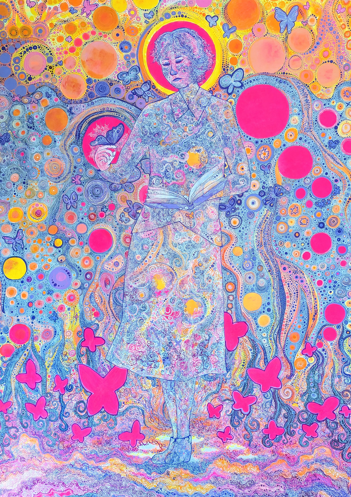
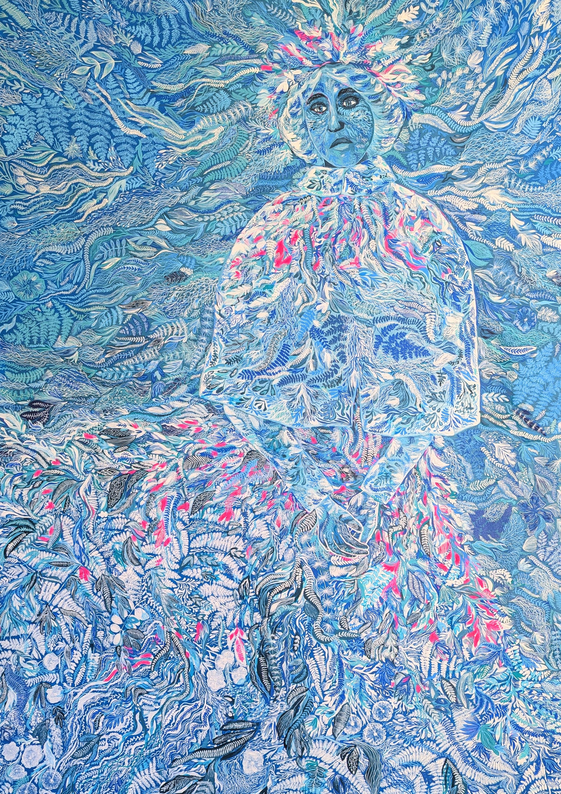
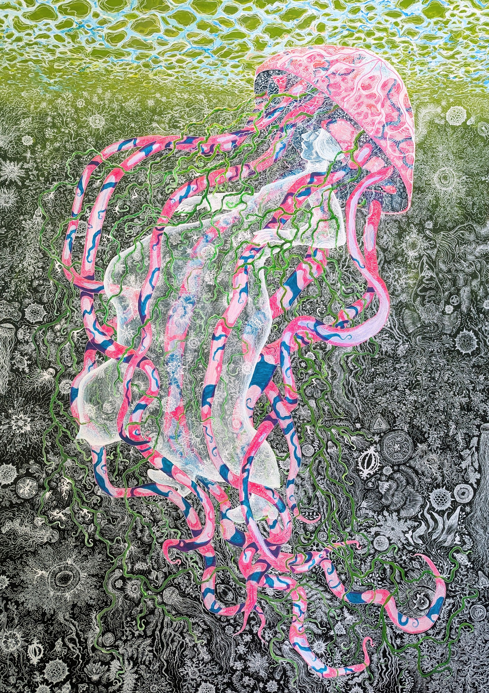
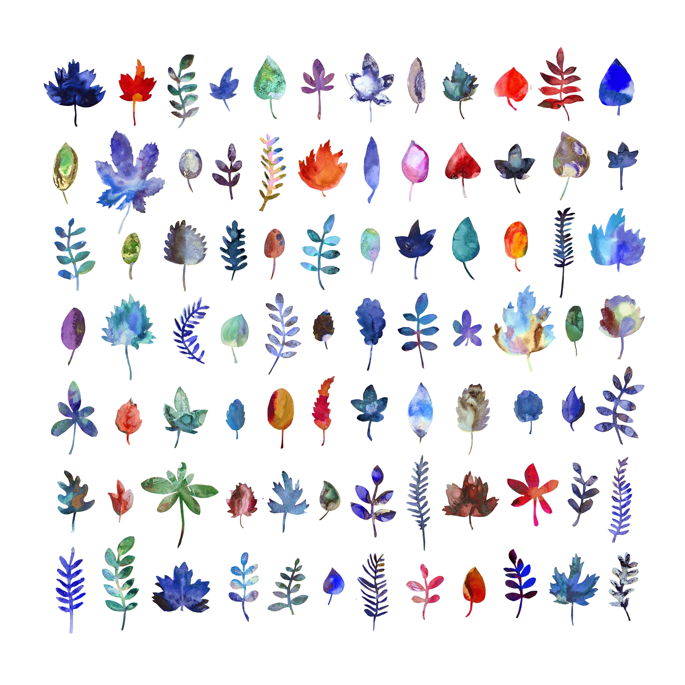
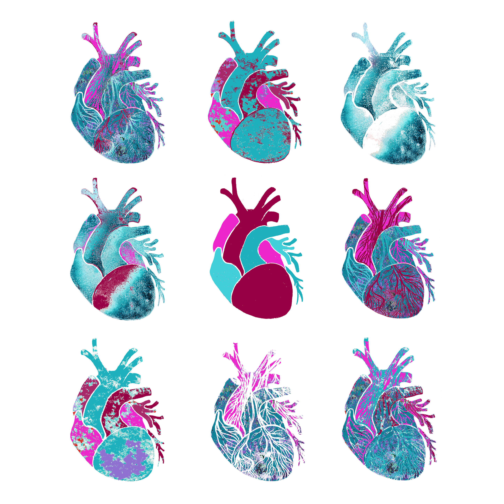
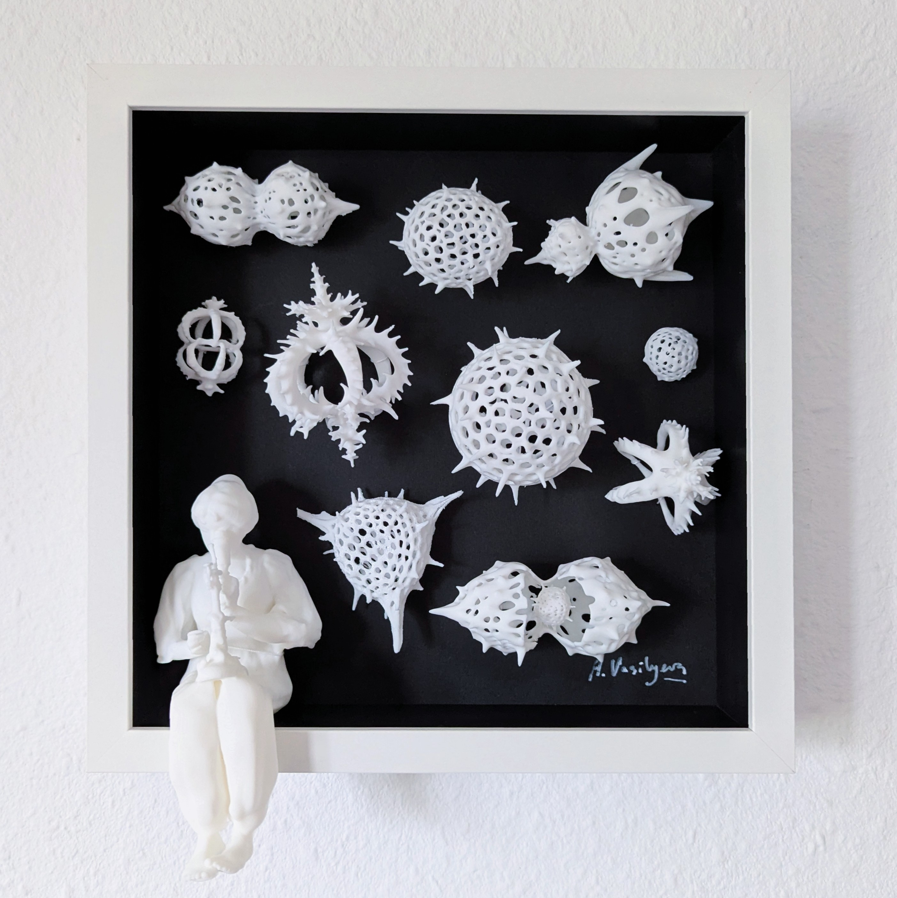
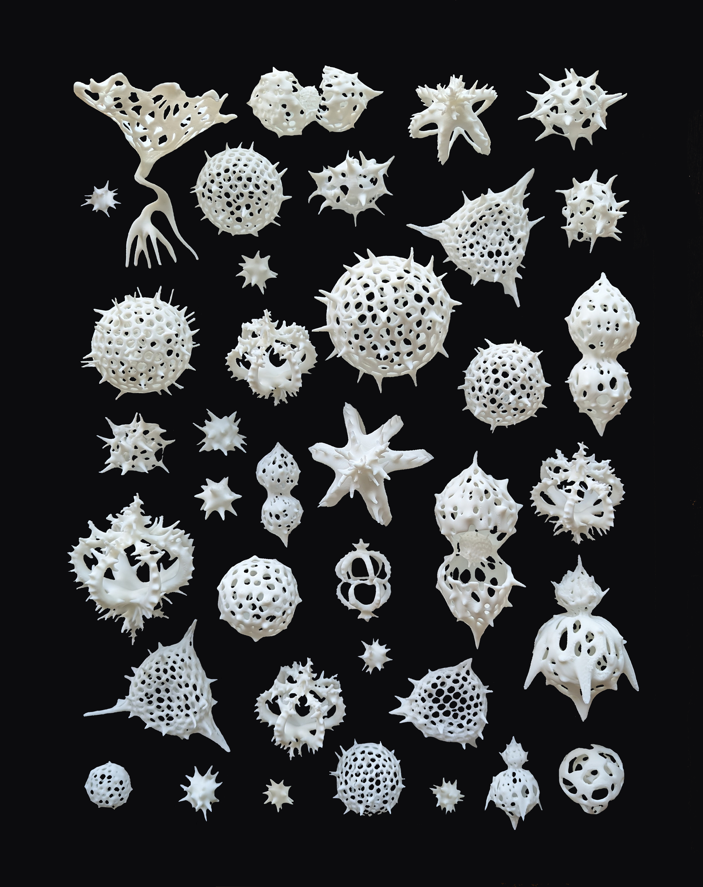

SCIENCE · ART · COMMUNICATION
The art of
good science.
Scientific illustration and visual communication exploring biology, medicine, nature and the systems around us.
SELECTED WORK
Art & illustration








ABOUT
Drawing things and
thinking stuff.
I am a scientist and artist working between research, visual culture and science communication.
I combine traditional media (painting, watercolour and printmaking) with digital approaches and 3D printing to make complex ideas tangible and engaging.
My artistic work is informed by a decade of laboratory research, including a doctorate in biomedical engineering from the University of Oxford.
Based in Berlin, I work with start-ups and researchers from academia and industry to tell their stories and make their scientific ideas accessible for different audiences.
I am passionate about connecting interdisciplinary communities and am a member of several science-art initiatives, including A Hidden Variable, Crearte and EDGE.
WORK WITH ME
Science communication
Scientific strategy, visual communication and narrative development.
Scientific illustration
Illustration for research, publishing, education and outreach.
Artistic projects
Collaborative projects connecting artistic practice with scientific research.
GET IN TOUCH